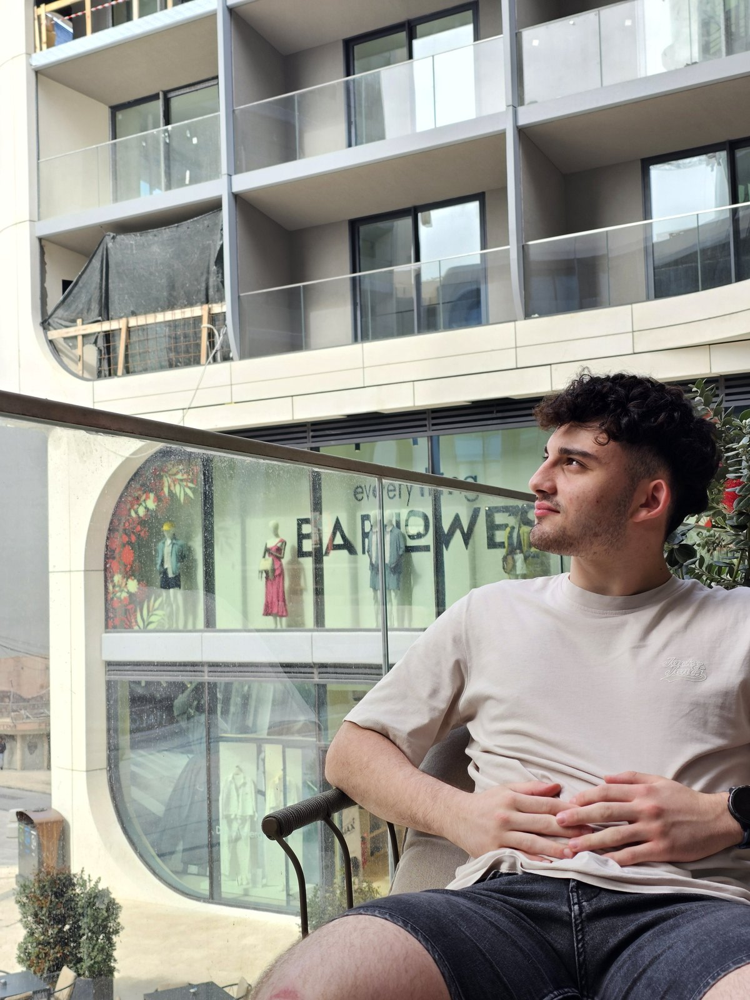

Liam Borg
Hello! I'm Liam and I'm 20 years old and currently undergoing a Diploma in Design Foundation Studies at the University of Malta. I have a passion for photography, especially stuff related to landscape and astrophotography and will also pursue a career as a photographer. I also like to dabble a bit with digital design, and follow closely the latest tech trends which inspires me to experiment with new tools, digital processes, and different ways of developing my work.